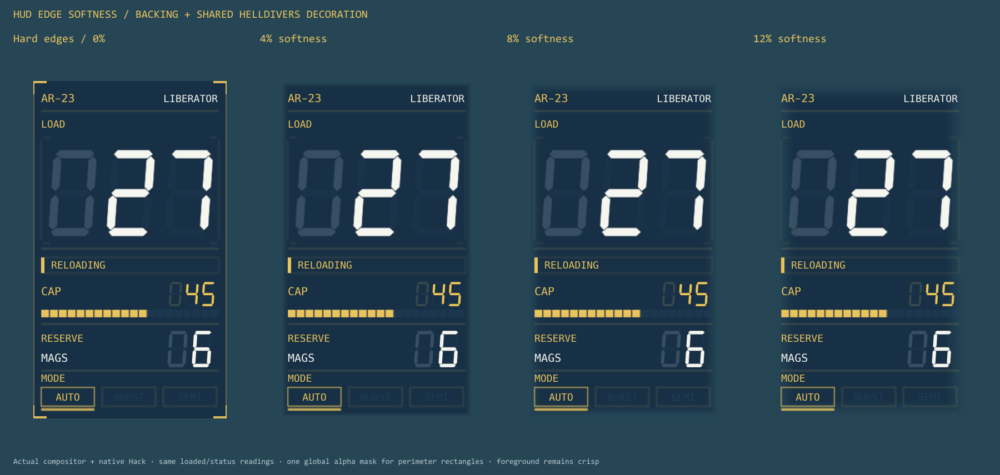

The backing and every shared Helldivers perimeter rectangle sample the same full-panel mask. Digits, rails, and status labels remain crisp.

At 4%, a thin stroke directly on the boundary becomes very faint. Higher values soften the backing further and almost remove those outer strokes.